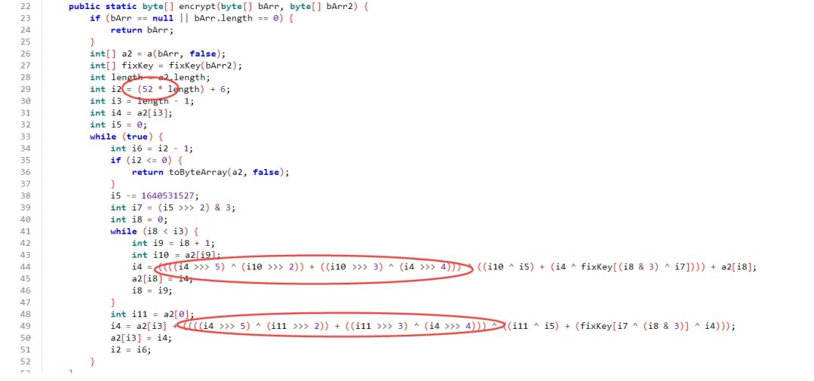

WMCTF2025 的安卓 Reverse 出题笔记，你也想成为魔法少女吗？
作为本次 WMCTF2025 的 Reverse 题目之一，因为害怕定位难做的人不多，我把此题目定位在 mid 难度（其实是我也不太确定难度捏，因为看懂了会很简单），直到比赛结束前的凌晨 2 点才出现了本题的唯一解（十分感谢这位师傅），解数也算是预料之中吧，不过居然成了本次解最少的 Re 题，我还是十分惭愧的。题目设计花了点时间导致 ddl 前没有写一篇详细的 WP 我十分抱歉，特此国庆回来写下这篇出题笔记，希望能对感兴趣的师傅有些许帮助，如果有不足之处还请师傅们在评论补充，十分感谢。
# 彩蛋部分
本次题目设计了一个小彩蛋，做题的师傅们有没有发现了吗？Apk 安装后就会出现一整个桌面的魔法少女图标并且有不同的语录，不管点哪一个图标都是可以进入到题目页面的，通过任何一个图标卸载程序全部图标都会消失。
多图标只要在声明 activity 的时候为每个 activity 加上以下标签就行了
<intent-filter> | |
<action android:name="android.intent.action.MAIN"/> | |
<category android:name="android.intent.category.LAUNCHER"/> | |
</intent-filter> |
比如
<activity | |
android:theme="@style/LaunchTheme" | |
android:label="Want2BecomeMagicalGirl" | |
android:icon="@drawable/magical_girl" | |
android:name="work.pangbai.magic.magical_girl.MainActivity" | |
android:exported="true" | |
android:launchMode="singleTop" | |
android:configChanges="fontScale|layoutDirection|density|smallestScreenSize|screenSize|uiMode|screenLayout|orientation|keyboardHidden|keyboard|locale" | |
android:windowSoftInputMode="adjustResize" | |
android:hardwareAccelerated="true"> | |
<meta-data | |
android:name="io.flutter.embedding.android.NormalTheme" | |
android:resource="@style/NormalTheme"/> | |
<intent-filter> | |
<action android:name="android.intent.action.MAIN"/> | |
<category android:name="android.intent.category.LAUNCHER"/> | |
</intent-filter> | |
</activity> | |
<activity | |
android:label="My magic is stronger than your darkness!" | |
android:icon="@drawable/magical_girl" | |
android:name="work.pangbai.magic.magical_girl.MainActivity1" | |
android:exported="true"> | |
<intent-filter> | |
<action android:name="android.intent.action.MAIN"/> | |
<category android:name="android.intent.category.LAUNCHER"/> | |
</intent-filter> | |
</activity> | |
<activity | |
android:label="In the name of the Moon, I'll punish you!" | |
android:icon="@drawable/magical_girl" | |
android:name="work.pangbai.magic.magical_girl.MainActivity2" | |
android:exported="true"> | |
<intent-filter> | |
<action android:name="android.intent.action.MAIN"/> | |
<category android:name="android.intent.category.LAUNCHER"/> | |
</intent-filter> | |
</activity> | |
<activity | |
android:label="Love and justice! Pretty sailor-suited soldier, Sailor Moon!" | |
android:icon="@drawable/magical_girl" | |
android:name="work.pangbai.magic.magical_girl.MainActivity3" | |
android:exported="true"> | |
<intent-filter> | |
<action android:name="android.intent.action.MAIN"/> | |
<category android:name="android.intent.category.LAUNCHER"/> | |
</intent-filter> | |
</activity> |
非主 Activity 的每个 Activity 申明一个类不写任何实现，就像这样
package work.pangbai.magic.magical_girl; | |
public class MainActivity1 extends MainActivity { | |
} |
再复制几个 Activity 之后不管点击哪个图标调转都会是第一个 MainActivity，这样就实现了多图标的效果，十分有趣。
# 题目架构
题目使用 flutter + native + Java 实现，多少有点花哨但是流程还是很清晰的： Flutter输入->加载libnative.so->修改字节码->判断libart.so指定位置有没有被修改->魔改aes加密->魔改Java加密->Flutter判断密文 ，整个程序只涉及到 AES 和 XXTEA 加密，其实最核心的部分是对 Java 层代码的魔改。
# Flutter 部分
第一部分在比赛进行的过程中就难倒了许多师傅， Flutter 框架写的题目在国内 CTF 比赛中不算常见，但是确实也出现过不少次了，比如 NepCTF2025，NKCTF2024，NewStarCTF2024 等等。这里逆向用到了项目 blutter 。
我推荐静态分析从 blutter 生成的 asm 开始入手，因为这里存在大部分代码结构和逻辑（几乎全部逻辑），而且同 IDA 分析的出的伪 C 代码不同，这里的类和函数是最清晰的，各种闭包的调用和字符串常量更是清晰可见 (在 IDA 中闭包可能是各种各样都基址 + 偏移调用)，IDA 只适合在 Hook 和调试时使用。
blutter 会生成 asm/magical_girl 文件夹下存在以下文件
目录: D:\share\出题\WMCTF\lib\output\asm\magical_girl | |
Mode LastWriteTime Length Name | |
---- ------------- ------ ---- | |
-a---- 2025/10/3 17:52 441492 aes_crypt_null_safe.dart | |
-a---- 2025/10/3 17:52 70967 EditView.dart | |
-a---- 2025/10/3 17:52 30221 main.dart | |
-a---- 2025/10/3 17:52 3717 null_sub0.dart |
仅从做题者的角度出发，代码 EditView.dart 的 check 函数就是 flutter 层的 check 逻辑。
blutter 是很优秀的工具，但是代码中夹杂大量不存在高亮的 ARM 汇编，阅读还是十分头疼的，在 ai 兴起的这个时代靠肉眼分析还是太过落后了，这里我借助 ai agent 来快速分析代码（注意 ai 并不完全可信细节部分任然需要自己审查）。
// lib: package:magical_girl/EditView.dart | |
// 重新分析后的正确还原代码 | |
import 'package:flutter/material.dart'; | |
import 'package:flutter/services.dart'; | |
import 'dart:convert'; | |
import 'dart:typed_data'; | |
import 'package:magical_girl/aes_crypt_null_safe.dart'; | |
import 'package:magical_girl/null_sub0.dart'; | |
import 'package:native_add/native_add.dart'; | |
class MyEditTextState extends State<dynamic> { | |
late TextEditingController _textController; | |
late String _displayText; | |
late dynamic _symmetricKey; | |
| |
void initState() { | |
super.initState(); | |
_textController = TextEditingController(); | |
_displayText = """魔法で最低な人を消そう | |
Let's use magic to erase the worst people | |
用魔法将恶人全部抹消 | |
はぁ正直もうやめたい（はぁ） | |
Sigh... Honestly I want to quit sigh | |
唉 说真的已经累了（唉） | |
魔法少女をやめたい（はぁ） | |
I want to stop being a magical girl sigh | |
不想再当魔法少女了（唉） | |
自分ごと消えちゃってさようなら | |
Maybe I should disappear myself - goodbye | |
连同自己也一起抹除 永别了"""; | |
} | |
| |
Widget build(BuildContext context) { | |
return Scaffold( | |
appBar: AppBar( | |
title: const Text( | |
"Want2BecomeMagicalGirl ! ! !", | |
style: TextStyle( | |
inherit: true, | |
color: Colors.blue, | |
), | |
), | |
backgroundColor: const Color(0xFFFFB6C1), // 粉色背景 | |
), | |
body: Container( | |
padding: const EdgeInsets.all(16.0), | |
child: Center( | |
child: Column( | |
mainAxisAlignment: MainAxisAlignment.start, | |
mainAxisSize: MainAxisSize.max, | |
crossAxisAlignment: CrossAxisAlignment.center, | |
children: [ | |
// 文本输入框 | |
TextField( | |
controller: _textController, | |
decoration: const InputDecoration( | |
hintText: "Fill Magical Spell Here and Press enter...", | |
filled: true, | |
), | |
textCapitalization: TextCapitalization.none, | |
textAlign: TextAlign.left, | |
obscureText: false, | |
autocorrect: false, | |
obscuringCharacter: "•", | |
enableSuggestions: false, | |
autofocus: true, | |
enableInteractiveSelection: true, | |
maxLines: 1, | |
readOnly: false, | |
onSubmitted: (String value) async { | |
await _onTextSubmitted(value); | |
}, | |
cursorHeight: 2.0, | |
scrollPadding: const EdgeInsets.all(20.0), | |
keyboardType: TextInputType.text, | |
enableIMEPersonalizedLearning: true, | |
), | |
// 显示当前文本 | |
Text( | |
_displayText, | |
style: const TextStyle( | |
inherit: true, | |
color: Colors.blue, | |
), | |
), | |
// 扩展的显示文本区域 | |
Expanded( | |
flex: 1, | |
child: Text( | |
_displayText, | |
style: const TextStyle( | |
inherit: true, | |
fontSize: 16.0, | |
fontWeight: FontWeight.bold, | |
), | |
), | |
), | |
], | |
), | |
), | |
), | |
resizeToAvoidBottomInset: true, | |
extendBody: false, | |
extendBodyBehindAppBar: false, | |
); | |
} | |
// 文本提交处理 | |
Future<void> _onTextSubmitted(String value) async { | |
setState(() { | |
check(_textController, value); | |
_textController.text = ""; | |
}); | |
} | |
// 核心验证方法 - 这是关键逻辑 | |
void check(TextEditingController controller, String inputText) { | |
// 1. 初始化 AES 加密 | |
final aesCrypt = AesCrypt(); | |
// 2. 创建两个不同的初始向量数组 | |
List<int> iv1 = [126, 70, 6, 426]; // 0x7E, 0x46, 0x06, 0x1AA | |
List<int> iv2 = [2, 2, 8, 10]; // 0x02, 0x02, 0x08, 0x0A | |
// 3. 转换为 Uint8List | |
Uint8List ivBytes1 = Uint8List(8); | |
ivBytes1.setRange(0, 4, iv1); | |
Uint8List ivBytes2 = Uint8List(8); | |
ivBytes2.setRange(0, 4, iv2); | |
// 4. 获取对称密钥 | |
_symmetricKey = getSym(); | |
// 5. 关键判断：检查对称密钥的第 7 个字节是否为 0xD6 | |
final symBuffer = _symmetricKey.asUint8List(); | |
bool isSpecialKey = symBuffer[7] == 0xD6; | |
// 6. 根据密钥类型选择不同的处理路径 | |
Uint8List finalKeyBytes; | |
if (isSpecialKey) { | |
// 特殊密钥路径：使用 ivBytes2 | |
final keyData = getKey(); | |
List<int> keyList = List<int>.from(keyData); | |
keyList.addAll(ivBytes2); | |
finalKeyBytes = Uint8List.fromList(keyList); | |
} else { | |
// 普通密钥路径：使用 ivBytes1 | |
final keyData = getKey(); | |
List<int> keyList = List<int>.from(keyData); | |
keyList.addAll(ivBytes1); | |
finalKeyBytes = Uint8List.fromList(keyList); | |
} | |
// 7. 准备 AES 密钥 (32 字节，256 位) | |
List<int> aesKeySequence = [ | |
2, 4, 6, 8, 10, 12, 14, 16, | |
18, 20, 22, 24, 26, 28, 30, 32 | |
]; | |
Uint8List aesKeyBytes = Uint8List(32); | |
aesKeyBytes.setRange(0, 16, aesKeySequence); | |
// 8. 设置 AES 加密参数 | |
aesCrypt.aesSetKeys(finalKeyBytes, aesKeyBytes); | |
aesCrypt.aesSetMode(/* 设置加密模式 */); | |
// 9. 对输入文本进行填充处理 | |
String paddedText = padToBlockSize(controller, inputText); | |
// 10. UTF-8 编码 | |
final utf8Bytes = const Utf8Encoder().convert(paddedText); | |
// 11. AES 加密 | |
final encryptedBytes = aesCrypt.aesEncrypt(Uint8List.fromList(utf8Bytes)); | |
// 12. 关键检查：验证对称密钥的特定位置 | |
final symData = _symmetricKey.asUint8List(); | |
int checkByte = (symData[3] >> 8) ^ 0xD6; // 检查第 3 个字节的高位 | |
if (checkByte == 0) { | |
// 如果检查通过，退出应用 | |
SystemNavigator.pop(); | |
} | |
// 13. 转换为十六进制字符串 | |
String hexResult = uint8ListToHex(controller, encryptedBytes); | |
// 14. 发送结果并处理响应 | |
send(hexResult).then((response) { | |
setState(() { | |
// 检查响应是否为特定的成功字符串 | |
if (response == "8sAFX45zT7uc0vSUyFNNly1h/d5zTt89tV3kcVr5P5n7lRKPyYtxg31zYNB2lPV0c5nf/x2/IK94XV9Ufs9XfaDG5IXxMlZy+Z2nE+ZZRFBSpMoKzQXfUq2TSjJJfQxV") { | |
_displayText = "You have become a magical girl ! !"; | |
} else { | |
_displayText = "This spell has no magic power"; | |
} | |
}); | |
}); | |
} | |
// 填充文本到块大小（PKCS7 填充） | |
String padToBlockSize(TextEditingController controller, String text) { | |
const int blockSize = 16; // AES 块大小 | |
int textLength = text.length; | |
int paddingLength = blockSize - (textLength & 15); // textLength % 16 | |
if (paddingLength == 0) { | |
paddingLength = 16; // 如果已经是 16 的倍数，仍需填充 16 字节 | |
} | |
// 创建填充字符数组 | |
List<int> paddingChars = List.filled(paddingLength, paddingLength * 2); | |
String paddingString = String.fromCharCodes(paddingChars); | |
return text + paddingString; | |
} | |
// 将 Uint8List 转换为十六进制字符串 | |
String uint8ListToHex(TextEditingController controller, Uint8List bytes) { | |
return bytes.map((byte) => byte.toRadixString(16).padLeft(2, '0')).join(); | |
} | |
} | |
// 主应用入口 | |
class MagicalGirlEditApp extends StatelessWidget { | |
const MagicalGirlEditApp({Key? key}) : super(key: key); | |
| |
Widget build(BuildContext context) { | |
return MaterialApp( | |
title: 'Magical Girl Editor', | |
theme: ThemeData( | |
primarySwatch: Colors.pink, | |
visualDensity: VisualDensity.adaptivePlatformDensity, | |
), | |
home: const MyEditTextState(), | |
); | |
} | |
} | |
void main() { | |
runApp(const MagicalGirlEditApp()); | |
} |
看到结果的时候连自己都吓到了，和源代码居然十分接近（如果更高级的 ai 应该就能 FullCombo 了），如果只分析大概逻辑，这个输出已经完全够用了。
基于此结果开始我们的分析， check 函数调用了一个 AES 加密， aesSetKeys 调用有两个参数，我使用的 ai 貌似这两个参数都猜成 key 了 ( finalKeyBytes, aesKeyBytes ，有钱的老板用 GPT5 肯定不会出现这种情况吧)， AES 有的两个加密参数，可能是 KEY 和 IV 常见为 16 字节，这边加密模式没分析出来，我们回原文看看也没能看到参数，可以先放一下。
aesKeyBytes 来自静态数组 [2, 4, 6, 8, 10, 12, 14, 16, 18, 20, 22, 24, 26, 28, 30, 32] 刚好 16 位，但是都是 2 的倍数， keyBytes 来自两个 list 拼接 ( addAll )，其中一部分在选自静态数组 [2, 2, 8, 10] , [126, 70, 6, 426] 另一部分来自 getKey ， 可以察觉到不对了，AES 传入的密钥都是 byte 类型，但是这里有数据超过 255，并且不存在奇数，除 2 之后 [1,1,4,5] ，瞬间可以要素察觉了，这里的所有 byte 都是左移 1 位的。同时 finalKeyBytes 的最终值取决于 getSym 返回的第八位是否等于 0xD6 。
再来分析加密代码，查看 aes_crypt_null_safe.dart 的 _sBox 函数 (为什么要看这个？因为这属于常见魔改项吧，都位于 magical_girl 目录下了，肯定不会是标准加密了)。
0x2903a0: mov x17, #0xf6 | |
0x2903a4: StoreField: r0->field_13 = r17 | |
0x2903a4: stur w17, [x0, #0x13] | |
0x2903a8: r17 = 48 | |
0x2903a8: mov x17, #0x30 | |
0x2903ac: ArrayStore: r0[0] = r17 ; List_4 | |
0x2903ac: stur w17, [x0, #0x17] | |
0x2903b0: r17 = 334 | |
0x2903b0: mov x17, #0x14e | |
0x2903b4: StoreField: r0->field_1b = r17 | |
0x2903b4: stur w17, [x0, #0x1b] | |
0x2903b8: r17 = 132 | |
0x2903b8: mov x17, #0x84 | |
0x2903bc: StoreField: r0->field_1f = r17 |
有很多存储常量操作，算一下刚好 256 个，这就是 SBOX，这里的数据也是左移一位的，扣出来就可以写逆盒了。
aes_crypt_null_safe.dart 同样可以 ai 还原，但是这部分出现 ai 幻觉太严重了，网上有开源算法引导 ai 输出标准结果。用静态分析还可以分析出第二处魔改。
0x28d728: cmp x1, x3 | |
0x28d72c: b.ge #0x28d770 | |
0x28d730: str x0, [SP] | |
0x28d734: r0 = _subBytes() | |
0x28d734: bl #0x2901b8 ; [package:magical_girl/aes_crypt_null_safe.dart] _Aes::_subBytes | |
0x28d738: ldr x16, [fp, #0x18] | |
0x28d73c: str x16, [SP] | |
0x28d740: r0 = _shiftRows() | |
0x28d740: bl #0x28ffb4 ; [package:magical_girl/aes_crypt_null_safe.dart] _Aes::_shiftRows | |
0x28d744: ldr x16, [fp, #0x18] | |
0x28d748: str x16, [SP, #8] | |
0x28d74c: ldur x0, [fp, #-8] | |
0x28d750: str x0, [SP] | |
0x28d754: r0 = _addRoundKey() | |
0x28d754: bl #0x291204 ; [package:magical_girl/aes_crypt_null_safe.dart] _Aes::_addRoundKey | |
0x28d758: ldr x16, [fp, #0x18] | |
0x28d75c: str x16, [SP] | |
0x28d760: r0 = _mixColumns() | |
0x28d760: bl #0x28d8b0 ; [package:magical_girl/aes_crypt_null_safe.dart] _Aes::_mixColumns | |
0x28d764: ldur x0, [fp, #-8] | |
0x28d768: add x1, x0, #1 | |
0x28d76c: b #0x28d6f8 | |
0x28d770: mov x0, x1 | |
0x28d774: ldur x1, [fp, #-0x20] | |
0x28d778: ldr x16, [fp, #0x18] | |
0x28d77c: str x16, [SP] |
轮密钥加密和列混淆交换位置，很常见的魔改。接下来通过调试消去不确定因素。
不知道大家是否有发现 IDA 分析的汇编结果和 blutter 解析结果有出入
blutter: | |
0x28c25c: ldur x16, [fp, #-0x10] | |
0x28c260: str x16, [SP] | |
0x28c264: r0 = aesSetMode() | |
-------------------------------- | |
IDA: | |
0x28C25C LDUR X16, [X29,#-0x10] | |
0x28C260 STR X16, [X15] | |
0x28C264 BL magical_girl$aes_crypt_null_safe_AesCrypt__aesSetMode_291548 |
对于 x29 寄存器，熟悉 arm 的朋友都知道，指的就是 fp 寄存器。但是对于 x15 寄存器来说，这个寄存器和 sp 并没有什么关系（ arm 的 sp 是 x31 寄存器）。说明 flutter 函数的调用并非标准调用，事实上从 blutter 生成的 blutter_frida.js 便可以看出端倪，
const PointerCompressedEnabled = true; | |
const CompressedWordSize = 4; | |
const HeapAddressReg = 'x28'; | |
const NullReg = 'x22'; | |
const StackReg = 'x15'; |
栈指针被定义为 x15，这个 x15 几乎不会被程序修改，，这里用作栈指针也尚可。
同时 blutter_frida.js 还存在以下代码，说明，传参是通过栈进行的。
function getArg(context, idx) { | |
// Note: argument pointer is never compressed | |
let stack = context[StackReg]; | |
return stack.add(8 * idx).readPointer(); | |
} |
IDA 把函数分析为 fastcall 调用约定，并不适用于 Flutter 函数，所以反编译结果十分丑陋。我们这里可以来借用 blutter_frida.js 分析一下传参规则。
0x28c244: ldur x16, [fp, #-0x10] | |
0x28c248: ldur lr, [fp, #-0x18] | |
0x28c24c: stp lr, x16, [SP, #8] | |
0x28c250: ldur x16, [fp, #-0x20] | |
0x28c254: str x16, [SP] | |
0x28c258: r0 = aesSetKeys() | |
0x28c258: bl #0x2915a4 ; [package:magical_girl/aes_crypt_null_safe.dart] AesCrypt::aesSetKeys | |
0x28c25c: ldur x16, [fp, #-0x10] | |
0x28c260: str x16, [SP] | |
0x28c264: r0 = aesSetMode() | |
0x28c264: bl #0x291548 ; [package:magical_girl/aes_crypt_null_safe.dart] AesCrypt::aesSetMode | |
0x28c268: ldr x16, [fp, #0x18] | |
0x28c26c: ldr lr, [fp, #0x10] | |
0x28c270: stp lr, x16, [SP] | |
... | |
0x28c288: ldur x16, [fp, #-0x10] | |
0x28c28c: stp x0, x16, [SP] | |
0x28c290: r0 = aesEncrypt() |
首先， aesSetKeys() 传入了两个参数，一个是 key , 一个是 iv , 我们通过以下修改来 hook 调用参数
// 使弹窗可关闭 | |
Java.perform(function () { | |
let a = Java.use("android.widget.Button"); | |
a["setEnabled"].implementation = function (enable) { | |
console.log("Button set enable") | |
this["setEnabled"](true); | |
}; | |
}); | |
const ShowNullField = false; | |
const MaxDepth = 5; | |
var libapp = null; | |
function onLibappLoaded() { | |
// xxx("remove this line and correct the hook value"); | |
const fn_addr = 0x2915a4; | |
Interceptor.attach(libapp.add(fn_addr), { | |
onEnter: function () { | |
init(this.context); | |
let objPtr = getArg(this.context, 0); | |
const [tptr, cls, values] = getTaggedObjectValue(objPtr); | |
console.log(`${cls.name}@${tptr.toString().slice(2)} =`, JSON.stringify(values, null, 2)); | |
} | |
}); | |
} |
getArg(this.context, 0) 更改第二个参数控制传参打印位置
frida -U -f work.pangbai.magic.magical_girl -l blutter_frida.js | |
____ | |
/ _ | Frida 16.6.6 - A world-class dynamic instrumentation toolkit | |
| (_| | | |
> _ | Commands: | |
/_/ |_| help -> Displays the help system | |
. . . . object? -> Display information about 'object' | |
. . . . exit/quit -> Exit | |
. . . . | |
. . . . More info at https://frida.re/docs/home/ | |
. . . . | |
. . . . Connected to Android Emulator 5554 (id=emulator-5554) | |
Spawned `work.pangbai.magic.magical_girl`. Resuming main thread! | |
[Android Emulator 5554::work.pangbai.magic.magical_girl ]-> Button set enable | |
_Uint8List@7b00721419 = [ | |
1, | |
2, | |
3, | |
4, | |
5, | |
6, | |
7, | |
8, | |
9, | |
10, | |
11, | |
12, | |
13, | |
14, | |
15, | |
16 | |
] | |
Process terminated | |
[Android Emulator 5554::work.pangbai.magic.magical_girl ]-> | |
Thank you for using Frida! | |
> frida -U -f work.pangbai.magic.magical_girl -l blutter_frida.js | |
____ | |
/ _ | Frida 16.6.6 - A world-class dynamic instrumentation toolkit | |
| (_| | | |
> _ | Commands: | |
/_/ |_| help -> Displays the help system | |
. . . . object? -> Display information about 'object' | |
. . . . exit/quit -> Exit | |
. . . . | |
. . . . More info at https://frida.re/docs/home/ | |
. . . . | |
. . . . Connected to Android Emulator 5554 (id=emulator-5554) | |
Spawned `work.pangbai.magic.magical_girl`. Resuming main thread! | |
[Android Emulator 5554::work.pangbai.magic.magical_girl ]-> Button set enable | |
_Uint8List@7b0071a079 = [ | |
122, | |
37, | |
197, | |
36, | |
198, | |
51, | |
76, | |
48, | |
243, | |
98, | |
175, | |
172, | |
63, | |
35, | |
3, | |
213 | |
] | |
Process terminated | |
[Android Emulator 5554::work.pangbai.magic.magical_girl ]-> | |
Thank you for using Frida! | |
> frida -U -f work.pangbai.magic.magical_girl -l blutter_frida.js | |
____ | |
/ _ | Frida 16.6.6 - A world-class dynamic instrumentation toolkit | |
| (_| | | |
> _ | Commands: | |
/_/ |_| help -> Displays the help system | |
. . . . object? -> Display information about 'object' | |
. . . . exit/quit -> Exit | |
. . . . | |
. . . . More info at https://frida.re/docs/home/ | |
. . . . | |
. . . . Connected to Android Emulator 5554 (id=emulator-5554) | |
Spawned `work.pangbai.magic.magical_girl`. Resuming main thread! | |
[Android Emulator 5554::work.pangbai.magic.magical_girl ]-> Button set enable | |
Unhandle class id: 30, Sentinel | |
Unhandle class id: 30, Sentinel | |
Unhandle class id: 85, Map | |
AesCrypt@7b006f6bb9 = { | |
"off_8!_Aes@7b006f6bc9": { | |
"off_8!Sentinel@7b00008301": "Unhandle class id: 30, Sentinel", | |
"off_10!Sentinel@7b00008301": "Unhandle class id: 30, Sentinel", | |
"off_14!List@7b006f6bf9": [ | |
{ | |
"key": [ | |
0, | |
0, | |
0, | |
0 | |
] | |
}, | |
{ | |
"key": [ | |
0, | |
0, | |
0, | |
0 | |
] | |
}, | |
{ | |
"key": [ | |
0, | |
0, | |
0, | |
0 | |
] | |
}, | |
{ | |
"key": [ | |
0, | |
0, | |
0, | |
0 | |
] | |
} | |
], | |
"off_18!AesMode@7b0045a1d1": { | |
"parent!_Enum": { | |
"off_8": "1", | |
"off_10!String@7b000f45e1": "cbc" | |
} | |
}, | |
"off_1c!_Uint8List@7b006f6c99": [], | |
"off_20!_Uint8List@7b006f6cb9": [] | |
}, | |
"off_c!Map@7b006f6da9": "Unhandle class id: 85, Map" | |
} | |
Process terminated |
对 aesSetMode 和 aesEncrypt_28c6a8 故技重施，也可找到输入的 flag 数据（ aesEncrypt_28c6a8 都第一个参数），便发现 Flutter 函数调用约定:
参数从右往左入栈，最后入栈对象的this指针 。到此处 Flutter 逆向便已经变得十分简单了， IDA 的那些错误的入参分析变得毫无价值。
将打印参数改为对象 this 指针 ( Hook 点必须在 aesSetMode 的后面，不然拿到的输出是 cbc )，我们可以看到 AES 加密模式：
"off_18!AesMode@7b0045a1d1": { | |
"parent!_Enum": { | |
"off_8": "1", | |
"off_10!String@7b000f45e1": "ecb" | |
} | |
}, |
key 在 aesSetKeys 也直接打印出来了，接下来只要 Hook 调试各个步骤看看加密的魔改情况就行了。加密是 AES ecb 加密， IV 失去了作用。
到此 Flutter 层就分析完毕了，是不是很简单呢，哈哈哈。
# Native 构思
我认为简单的 Flutter 逆向拿出来给师傅们看，还是太草率了，多少有点难登大雅之堂，真正好的题目，出题人花费的时间远会比做题人花费的时间长。
Native 首先要介绍一下 安卓原生库的命名空间
Android 7.0 为原生库引入了命名空间，以限制内部 API 的可见性，听起来很高大上，具体解释就是安卓上的动态链接库使用被约束了，普通开发者不管是编译时链接还是使用 dlsym 都不能获取到被限制的 lib 的符号地址， native 开发能调用的 api 被严重限制，同理 Java 也有类似的约束 hiddenapi 用来限制反射的功能。
本题目使用 fake-dlfcn 来查找调用 libart.so 的符号，同时修改了一些代码来适配高版本安卓。这个项目原理比较简单，扫描 proc/self/maps 得到原生库的基址，并通过解析原生库的 elf 符号表得到偏移，再进行计算得到符号地址。
题目使用的 inlineHook 的 shellcode 来自 inlineHook
接下来可以看 native 了， libnative_add.so 在 Flutter 输入框回车的时候被加载。 genKey 函数是一个 rc4 用来生成静态的 Key ，通过 blutter 生成的代码可以知道这个函数被 flutter 的 getKey() 调用没有什么需要细说的。 getSym 函数被 flutter 的 getSym 函数调用。其伪代码如下
__int64 __fastcall getSym(char *a1) | |
{ | |
__int64 result; // x0 | |
result = sub_19B50("libart.so", 0LL); | |
if ( result ) | |
return sub_19F78(result, a1); | |
return result; | |
} |
调用 fake-dlfcn 解析获得 libart.so 中指定符号的地址，hook 即可得到参数 a1 为 _ZN3art9ArtMethod12PrettyMethodEb ，这里就可以解答之前的迷惑了，这里的 getSym 是 Frida 检测的一部分。
bool isSpecialKey = symBuffer[7] == 0xD6; | |
// 6. 根据密钥类型选择不同的处理路径 | |
Uint8List finalKeyBytes; | |
if (isSpecialKey) { | |
// 特殊密钥路径：使用 ivBytes2 | |
final keyData = getKey(); | |
List<int> keyList = List<int>.from(keyData); | |
keyList.addAll(ivBytes2); | |
finalKeyBytes = Uint8List.fromList(keyList); | |
} else { | |
// 普通密钥路径：使用 ivBytes1 | |
final keyData = getKey(); | |
List<int> keyList = List<int>.from(keyData); | |
keyList.addAll(ivBytes1); | |
finalKeyBytes = Uint8List.fromList(keyList); | |
} | |
... | |
int checkByte = (symData[3] >> 8) ^ 0xD6; // 检查第 3 个字节的高位 | |
if (checkByte == 0) { | |
// 如果检查通过，退出应用 | |
SystemNavigator.pop(); | |
} |
检测 PrettyMethod 的函数头是否有 br 指令特征（0xD6），
检测点来自代码 frida-java-bridge， libmsaoaidsec.so 也存在这种检测方案。
LOAD:00000000001A8BF4 ; _QWORD art::ArtMethod::PrettyMethod(art::ArtMethod *__hidden this, bool) | |
LOAD:00000000001A8BF4 EXPORT _ZN3art9ArtMethod12PrettyMethodEb | |
LOAD:00000000001A8BF4 _ZN3art9ArtMethod12PrettyMethodEb ; CODE XREF: sub_1549B8+174↑p | |
LOAD:00000000001A8BF4 ; sub_1698B8+174↑p ... | |
LOAD:00000000001A8BF4 50 00 00 58 LDR X16, loc_1A8BFC | |
LOAD:00000000001A8BF8 00 02 1F D6 BR X16 |
这个检测点从代码上来看，但凡使用过 frida-java-bridge 的都会存在，但在我测试 Frida 16 最后一个版本时（16.7.19），这个检测点完全失效了。失效原因十分奇特，这个函数字节码在程序里的检测代码来看是完全正常的，但在我使用 Frida 把 libart.so 给 dump 出来时却发现该位置已经是被修改了。当我再切换到 Frida 16.5.6 检测代码成功检测到字节码被修改。只能猜到新版 Frida 应用了某些特殊修改，此检测机制对于新版 Frida 可能失效，有师傅能解答我的疑问的话，可以在评论留言。
题目中绕过这个检测的就能获得真正的 aeskey ，如果没绕过就会退出程序。
接下来就是程序最重要的部分了，在 .init_proc 有如下代码
int init_proc() | |
{ | |
FILE *v0; // x0 | |
int8x16_t v1; // q1 | |
__int64 v2; // x19 | |
__int64 v3; // x21 | |
... | |
v34 = *(_QWORD *)(_ReadStatusReg(ARM64_SYSREG(3, 3, 13, 0, 2)) + 40); | |
v33 = veorq_s8( | |
veorq_s8((int8x16_t)l, (int8x16_t)shellcode_end_), | |
vqtbl1q_s8((int8x16_t)xmmword_10250, (int8x16_t)shellcode_end_)); | |
v0 = dlopen((const char *)&v33); // libart.so | |
v1 = veorq_s8((int8x16_t)l, (int8x16_t)shellcode_end_); | |
v2 = (__int64)v0; | |
*(int8x16_t *)s2 = veorq_s8(v1, vqtbl1q_s8((int8x16_t)xmmword_10150, (int8x16_t)shellcode_end_)); | |
v26 = veorq_s8(v1, vqtbl1q_s8((int8x16_t)xmmword_10270, (int8x16_t)shellcode_end_)); | |
v27 = veorq_s8(v1, vqtbl1q_s8((int8x16_t)xmmword_10100, (int8x16_t)shellcode_end_)); | |
v28 = veorq_s8(v1, vqtbl1q_s8((int8x16_t)xmmword_10180, (int8x16_t)shellcode_end_)); | |
v29 = veorq_s8(v1, vqtbl1q_s8((int8x16_t)xmmword_101D0, (int8x16_t)shellcode_end_)); | |
v30 = veorq_s8(v1, vqtbl1q_s8((int8x16_t)xmmword_10130, (int8x16_t)shellcode_end_)); | |
v31 = veorq_s8(v1, vqtbl1q_s8((int8x16_t)xmmword_10190, (int8x16_t)shellcode_end_)); | |
v32 = veorq_s8(v1, vqtbl1q_s8((int8x16_t)xmmword_10260, (int8x16_t)shellcode_end_)); | |
v3 = dlsym((__int64)v0, s2); // _ZN3art11interpreter6DoCallILb0EEEbPNS_9ArtMethodEPNS_6ThreadERNS_11ShadowFrameEPKNS_11InstructionEtbPNS_6JValueE | |
if ( !v3 ) | |
{ | |
v4 = veorq_s8((int8x16_t)l, (int8x16_t)shellcode_end_); | |
*(int8x16_t *)v17 = veorq_s8(v4, vqtbl1q_s8((int8x16_t)xmmword_10150, (int8x16_t)shellcode_end_)); | |
v18 = veorq_s8(v4, vqtbl1q_s8((int8x16_t)xmmword_10270, (int8x16_t)shellcode_end_)); | |
v19 = veorq_s8(v4, vqtbl1q_s8((int8x16_t)xmmword_10120, (int8x16_t)shellcode_end_)); | |
v20 = veorq_s8(v4, vqtbl1q_s8((int8x16_t)xmmword_101E0, (int8x16_t)shellcode_end_)); | |
v21 = veorq_s8(v4, vqtbl1q_s8((int8x16_t)xmmword_101A0, (int8x16_t)shellcode_end_)); | |
v22 = veorq_s8(v4, vqtbl1q_s8((int8x16_t)xmmword_10230, (int8x16_t)shellcode_end_)); | |
v23 = veorq_s8(v4, vqtbl1q_s8((int8x16_t)xmmword_10200, (int8x16_t)shellcode_end_)); | |
v24 = veorq_s8(v4, vqtbl1q_s8((int8x16_t)xmmword_101B0, (int8x16_t)shellcode_end_)); | |
v3 = dlsym(v2, v17); // _ZN3art11interpreter6DoCallILb0ELb0EEEbPNS_9ArtMethodEPNS_6ThreadERNS_11ShadowFrameEPKNS_11InstructionEtPNS_6JValueE | |
} | |
v5 = veorq_s8((int8x16_t)l, (int8x16_t)shellcode_end_); | |
*(int8x16_t *)v17 = veorq_s8(v5, vqtbl1q_s8((int8x16_t)xmmword_10110, (int8x16_t)shellcode_end_)); | |
v18 = veorq_s8(v5, vqtbl1q_s8((int8x16_t)xmmword_10210, (int8x16_t)shellcode_end_)); | |
v19 = veorq_s8(v5, vqtbl1q_s8((int8x16_t)xmmword_10160, (int8x16_t)shellcode_end_)); | |
off_41F40 = (_UNKNOWN *)dlsym(v2, v17); // _ZN3art9ArtMethod12PrettyMethodEb | |
v6 = getpagesize(); | |
v7 = (char *)linux_eabi_syscall(__NR_mmap, 0LL, v6, 7, 34, 0, 0LL); | |
memset(v7, 0, v6); | |
memcpy(v7, &shellcode_start_, (char *)&shellcode_end_ - (char *)&shellcode_start_); | |
jmp_addr_ = (__int64)v7; | |
*(_QWORD *)&v7[&the_func_addr_ - &shellcode_start_] = sub_1A51C; | |
*(_QWORD *)&v7[&end_func_addr_ - &shellcode_start_] = sub_1A6E0; | |
*(_QWORD *)&v7[&retback_addr_ - &shellcode_start_] = v3 + 16; | |
v8 = &ori_ins_set1_ - &shellcode_start_ + 8; | |
*(_QWORD *)&v7[&ori_ins_set1_ - &shellcode_start_] = *(_QWORD *)v3; | |
*(_QWORD *)&v7[v8] = *(_QWORD *)(v3 + 8); | |
v9 = linux_eabi_syscall(__NR_mprotect, (void *)(-(__int64)v6 & v3), v6, 7); | |
*(_QWORD *)v3 = trampoline_; | |
*(_QWORD *)(v3 + 8) = jmp_addr_; | |
v10 = veorq_s8((int8x16_t)l, (int8x16_t)shellcode_end_); | |
leave1 = &shellcode_part2_ - &shellcode_start_; | |
*(int8x16_t *)v14 = veorq_s8(v10, vqtbl1q_s8((int8x16_t)xmmword_101C0, (int8x16_t)shellcode_end_)); | |
v15 = veorq_s8(v10, vqtbl1q_s8((int8x16_t)xmmword_10140, (int8x16_t)shellcode_end_)); | |
v16 = veorq_s8(v10, vqtbl1q_s8((int8x16_t)xmmword_10170, (int8x16_t)shellcode_end_)); | |
v11 = dlsym(v2, v14); // _ZNK3art9OatHeader12IsDebuggableE | |
v12 = (char *)linux_eabi_syscall(__NR_mmap, 0LL, v6, 7, 34, 0, 0LL); | |
memset(v12, 0, v6); | |
memcpy(v12, &shellcode_start_, (char *)&shellcode_end_ - (char *)&shellcode_start_); | |
jmp_addr_ = (__int64)v12; | |
*(_QWORD *)&v12[&the_func_addr_ - &shellcode_start_] = sub_1A710; | |
*(_QWORD *)&v12[&end_func_addr_ - &shellcode_start_] = sub_1A76C; | |
*(_QWORD *)&v12[&retback_addr_ - &shellcode_start_] = v11 + 16; | |
*(_QWORD *)&v12[&ori_ins_set1_ - &shellcode_start_] = *(_QWORD *)v11; | |
*(_QWORD *)&v12[v8] = *(_QWORD *)(v11 + 8); | |
result = linux_eabi_syscall(__NR_mprotect, (void *)(v11 & -(__int64)v6), v6, 7); | |
*(_QWORD *)v11 = trampoline_; | |
*(_QWORD *)(v11 + 8) = jmp_addr_; | |
leave2 = &shellcode_part2_ - &shellcode_start_; | |
return result; | |
} |
有字符串混淆，代码使用 neon指令集 对字符串进行解密， veorq_s8 和 vqtbl1q_s8 ，一个是异或指令，一个是取表换位指令，了解一下就可以写出字符串解密脚本，用 Frida hook init 需要 Hook连接器 也可以恢复出来。
接下来分析函数，首先是 shellcode 全局变量，转化为汇编后可以看到保护现场的 shellcode
.data:0000000000041C88
.data:0000000000041C88 MOV X1, X30
.data:0000000000041C8C STP X1, X0, [SP,#arg_40]
.data:0000000000041C90 STP XZR, X2, [SP,#arg_50]
.data:0000000000041C94 MOV X30, X2
.data:0000000000041C98 LDP X1, X0, [SP,#arg_30]
.data:0000000000041C9C LDP X3, X2, [SP,#arg_20]
.data:0000000000041CA0 SUB SP, SP, #0x200
.data:0000000000041CA4 STP Q0, Q1, [SP,#0x200+var_200]
.data:0000000000041CA8 STP Q2, Q3, [SP,#0x200+var_1E0]
.data:0000000000041CAC STP Q4, Q5, [SP,#0x200+var_1C0]
.data:0000000000041CB0 STP Q6, Q7, [SP,#0x200+var_1A0]
.data:0000000000041CB4 STP X0, X1, [SP,#0x200+var_200]
.data:0000000000041CB8 STP X2, X3, [SP,#0x200+var_1F0]
.data:0000000000041CBC STP X4, X5, [SP,#0x200+var_1E0]
.data:0000000000041CC0 STP X6, X7, [SP,#0x200+var_1D0]
.data:0000000000041CC4 STP X8, X9, [SP,#0x200+var_1C0]
.data:0000000000041CC8 STP X10, X11, [SP,#0x200+var_1B0]
.data:0000000000041CCC STP X12, X13, [SP,#0x200+var_1A0]
.data:0000000000041CD0 STP X14, X15, [SP,#0x200+var_190]
.data:0000000000041CD4 STP X16, X17, [SP,#0x200+var_180]
.data:0000000000041CD8 STP X18, X19, [SP,#0x200+var_170]
.data:0000000000041CDC STP X20, X21, [SP,#0x200+var_160]
.data:0000000000041CE0 STP X22, X23, [SP,#0x200+var_150]
.data:0000000000041CE4 STP X24, X25, [SP,#0x200+var_140]
.data:0000000000041CE8 STP X26, X27, [SP,#0x200+var_130]
.data:0000000000041CEC STP X28, X29, [SP,#0x200+var_120]
.data:0000000000041CF0 STP X30, XZR, [SP,#0x200+var_110]
.data:0000000000041CF4 ADD X0, SP, #0x200+arg_0
.data:0000000000041CF8 ADR X16, _the_func_addr_
.data:0000000000041CFC LDR X16, [X16]
.data:0000000000041D00 BLR X16
.data:0000000000041D04 LDP X0, X1, [SP,#0x200+var_200]
.data:0000000000041D08 LDP X2, X3, [SP,#0x200+var_1F0]
.data:0000000000041D0C LDP X4, X5, [SP,#0x200+var_1E0]
.data:0000000000041D10 LDP X6, X7, [SP,#0x200+var_1D0]
.data:0000000000041D14 LDP X8, X9, [SP,#0x200+var_1C0]
.data:0000000000041D18 LDP X10, X11, [SP,#0x200+var_1B0]
.data:0000000000041D1C LDP X12, X13, [SP,#0x200+var_1A0]
.data:0000000000041D20 LDP X14, X15, [SP,#0x200+var_190]
.data:0000000000041D24 LDP X16, X17, [SP,#0x200+var_180]
.data:0000000000041D28 LDP X18, X19, [SP,#0x200+var_170]
.data:0000000000041D2C LDP X20, X21, [SP,#0x200+var_160]
.data:0000000000041D30 LDP X22, X23, [SP,#0x200+var_150]
.data:0000000000041D34 LDP X24, X25, [SP,#0x200+var_140]
.data:0000000000041D38 LDP X26, X27, [SP,#0x200+var_130]
.data:0000000000041D3C LDP X28, X29, [SP,#0x200+var_120]
.data:0000000000041D40 LDP X30, XZR, [SP,#0x200+var_110]
.data:0000000000041D44 LDP Q0, Q1, [SP,#0x200+var_200]
.data:0000000000041D48 LDP Q2, Q3, [SP,#0x200+var_1E0]
.data:0000000000041D4C LDP Q4, Q5, [SP,#0x200+var_1C0]
.data:0000000000041D50 LDP Q6, Q7, [SP,#0x200+var_1A0]
.data:0000000000041D54 ADD SP, SP, #0x200
.data:0000000000041D58 LDP X7, X6, [SP,#arg_0]
.data:0000000000041D5C LDP X5, X4, [SP,#arg_10]
.data:0000000000041D60 LDP X3, X2, [SP,#arg_20]
.data:0000000000041D64 LDP X1, X0, [SP,#arg_30]
.data:0000000000041D68 LDP XZR, X30, [SP,#arg_50]
.data:0000000000041D6C ADD SP, SP, #0x60 ; '`'
.data:0000000000041D70
.data:0000000000041D70 EXPORT _ori_ins_set1_
有保护现场的 shellcode ，有 jmp_addr_ 全局变量，还有以下把函数赋值到变量的操作，可以想到是 inlinehook 了
jmp_addr_ = (__int64)v7; | |
*(_QWORD *)&v7[&the_func_addr_ - &shellcode_start_] = sub_1A51C; | |
*(_QWORD *)&v7[&end_func_addr_ - &shellcode_start_] = sub_1A6E0; | |
*(_QWORD *)&v7[&retback_addr_ - &shellcode_start_] = v3 + 16; | |
v8 = &ori_ins_set1_ - &shellcode_start_ + 8; |
Hook 的目标肯定是那些 C 艹符号，可以梳理一下流程：
dl = fk_dlopen("libart.so") | |
docall_sym = fk_dlsym(dl,"...DoCall...") | |
if(docall_sym == 0){ | |
docall_sym = fk_dlsym(dl,"...DoCall2...") | |
} | |
prettymethod_sym = fk_dlsym(dl,"...PrettyMethod...") | |
hook(docall_sym,enter_fun,leave_fun) | |
IsDebuggable_sym = fk_dlsym(dl,"...IsDebuggable...") | |
hook(IsDebuggable_sym,enter_fun2,leave_fun2) |
对于 IsDebuggable
*(_QWORD *)&v12[&the_func_addr_ - &shellcode_start_] = sub_1A710; | |
*(_QWORD *)&v12[&end_func_addr_ - &shellcode_start_] = sub_1A76C; |
看 shellcode 可以知道第一个是 onEnter ，第二个是 onLeave ，这两个函数并没有太多更改操作，仅 sub_1A710 更改函数返回指为 1。为什么要 Hook 这个函数？这里是为了杜绝代码走 JIT ，大家都知道，安卓字节码最终执行有三种路径：解释模式， JIT ，和 AOT

解释模式顾名思义就是 VM 解析字节码然后运行（本题目需要走这种模式）， JIT 就是运行时编译成机械码， AOT 就是运行前编译成机械码。后两种编译模式共用一个编译器。本次的 Apk 是 Release 构建的默认会使 Java 代码的执行走 AOT （ AOT 文件会在 Apk 安装时生成，同时在 Apk 运行时通过收集信息优化 oat 文件），如果不进行处理，后面的 DoCall 是不会被触发的（因为 DoCall 是解释模式才会用到的，这一点从 art::interpreter::DoCall 这个前缀就可以看出来），值得注意的是如果你将 Apk 编译为 Debug 将不会触发 AOT ，但或许会触发 JIT ，权衡下还是以 Release 为目标了，也是为了学习吧哈哈。
当初立马想到， DEX 如果是在 apk 安装才会指出 dex2oat 那为什么不直接通过动态加载 Dex 绕过 AOT 呢，我马上加载马上使用的 Dex 你总不可能优化了吧。但这个思路是不可行的，动态加载 Dex 不走 oat 只有一种情况：使用 InMemoryDexClassLoader ，但从 Android10 开始， InMemoryDexClassLoader 加载的 Dex 文件也会走 AOT 流程。那么剩下的方法就是 Hook AOT 加载流程，需要找一个必定导出 libart.so 函数来实施计划，打开 AOSP 看看，但随即发现大部分符号都是 HIDDEN 的，能使用的符号少之又少，又由于题目的 hook 程序是在点击后启动的，几乎很难找到符合要求的 Hook 点。随后在拷打 ai 的时候发现 _ZNK3art9OatHeader12IsDebuggableE ，尝试后发现能在 Release 打包使 DoCall 被 Hook 到，在 a11～a15 的设备测试也没有问题，由于 ddl 临近没深追究就用上了。
对于 DoCall
*(_QWORD *)&v7[&the_func_addr_ - &shellcode_start_] = sub_1A51C; | |
*(_QWORD *)&v7[&end_func_addr_ - &shellcode_start_] = sub_1A6E0; |
只分析 sub_1A51C 即可
void __fastcall sub_1A51C(_QWORD *a1) | |
{ | |
__int64 v2; // x21 | |
__int64 v3; // x21 | |
int8x16_t v4; // q0 | |
int8x16_t v5; // q3 | |
int8x16_t v6; // q1 | |
const char *v7; // x19 | |
size_t v8; // x1 | |
__int64 i; // x9 | |
__int16 v10; // w8 | |
int v11; // w0 | |
__int16 v12; // w13 | |
__int128 v13; // q1 | |
_OWORD *v14; // x8 | |
__int128 v15; // q0 | |
__int128 v16; // q2 | |
__int128 v17; // q3 | |
__int128 v18; // q0 | |
__int128 v19; // q2 | |
__int128 v20; // q3 | |
void *v21[2]; // [xsp+8h] [xbp-48h] BYREF | |
void *v22; // [xsp+18h] [xbp-38h] | |
char needle[16]; // [xsp+20h] [xbp-30h] BYREF | |
char v24[16]; // [xsp+30h] [xbp-20h] BYREF | |
__int64 v25; // [xsp+48h] [xbp-8h] | |
v25 = *(_QWORD *)(_ReadStatusReg(ARM64_SYSREG(3, 3, 13, 0, 2)) + 40); | |
v2 = a1[11]; | |
*(_QWORD *)__emutls_get_address(&_emutls_v_ori_lr1) = v2; | |
v3 = a1[4]; | |
prettymethod_sym(v21, a1[7], 0LL); | |
v4 = vqtbl1q_s8((int8x16_t)xmmword_101F0, (int8x16_t)shellcode_end_); | |
v5 = veorq_s8((int8x16_t)shellcode_end_, (int8x16_t)l); | |
v6 = vqtbl1q_s8((int8x16_t)xmmword_10240, (int8x16_t)shellcode_end_); | |
if ( ((__int64)v21[0] & 1) != 0 ) | |
v7 = (const char *)v22; | |
else | |
v7 = (char *)v21 + 1; | |
*(int8x16_t *)needle = veorq_s8(v5, v4); | |
*(int8x16_t *)v24 = veorq_s8(v5, v6); | |
if ( v7 ) | |
{ | |
if ( strstr(v7, needle) ) // gic.toB | |
{ | |
qword_41F58 = v3; | |
v8 = getpagesize(); | |
for ( i = 0LL; i != 160; i += 2LL ) | |
{ | |
v11 = linux_eabi_syscall(__NR_mprotect, (void *)(-(__int64)v8 & v3), v8, 7); | |
v12 = *(_WORD *)(v3 + i); | |
*(_WORD *)((char *)&xmmword_41F60 + i) = v12; | |
if ( (unsigned __int8)v12 == 179 ) | |
v10 = v12 & 0xFFB2; | |
else | |
v10 = v12; | |
if ( (unsigned __int8)v12 == 179 || (unsigned __int8)v10 == 224 ) | |
{ | |
if ( (unsigned __int8)v10 == 224 ) | |
v10 |= 2u; | |
*(_WORD *)(v3 + i) = v10; | |
} | |
} | |
} | |
else if ( strstr(v7, v24) ) // gic.fi | |
{ | |
v13 = *(_OWORD *)algn_41F70; | |
v14 = (_OWORD *)qword_41F58; | |
*(_OWORD *)qword_41F58 = xmmword_41F60; | |
v14[1] = v13; | |
v15 = unk_41FB0; | |
v17 = xmmword_41F80; | |
v16 = unk_41F90; | |
v14[4] = xmmword_41FA0; | |
v14[5] = v15; | |
v14[2] = v17; | |
v14[3] = v16; | |
v18 = unk_41FF0; | |
v20 = xmmword_41FC0; | |
v19 = unk_41FD0; | |
v14[8] = xmmword_41FE0; | |
v14[9] = v18; | |
v14[6] = v20; | |
v14[7] = v19; | |
} | |
} | |
} |
解密字符串可以得到 gic.toB 和 gic.fi ，对应 magic.fixKey 和 magic.toByteArray ，结合 C 艹函数 DoCall ，可以猜测，Java 层代码在执行时，会被这个 onEnter 进行某种处理。
根据符号可以定位到这个函数 Aosp DoCall
以下解释来自 Deepseek
/** | |
* 执行方法调用 - ART 解释器核心方法调用例程 | |
* 处理所有 invoke-XXX 指令的实际调用分派 | |
* | |
* @param called_method 目标方法对象指针，已解析好的要调用的方法 | |
* @param self 当前线程对象指针 | |
* @param shadow_frame 当前栈帧引用，包含局部变量和操作数栈 | |
* @param inst 当前指令指针，指向正在执行的 invoke 指令 | |
* @param inst_data 指令数据，已解码的指令操作数 | |
* @param is_string_init 是否为字符串构造函数特殊处理 | |
* @param result 方法返回值存储位置 | |
* @return bool 调用是否成功执行 | |
*/ | |
bool DoCall(ArtMethod* called_method, // 目标方法 | |
Thread* self, // 当前线程 | |
ShadowFrame& shadow_frame, // 当前栈帧 | |
const Instruction* inst, // 调用指令 | |
uint16_t inst_data, // 指令数据 | |
bool is_string_init, // 字符串构造标记 | |
JValue* result) { // 返回值存储 | |
// 从指令中获取参数个数（区分 range 和非 range 格式） | |
const uint16_t number_of_inputs = | |
(is_range) ? inst->VRegA_3rc(inst_data) : inst->VRegA_35c(inst_data); | |
// 参数寄存器处理：非 range 使用数组，range 使用连续寄存器段 | |
uint32_t arg[Instruction::kMaxVarArgRegs] = {}; | |
uint32_t vregC = 0; | |
if (is_range) { | |
vregC = inst->VRegC_3rc(); //range 格式：起始寄存器编号 | |
} else { | |
vregC = inst->VRegC_35c(); // 非 range 格式：参数寄存器数组 | |
inst->GetVarArgs(arg, inst_data); | |
} | |
// 调用通用处理逻辑 | |
return DoCallCommon<is_range>(called_method, self, shadow_frame, result, | |
number_of_inputs, arg, vregC, is_string_init); | |
} |
这里面有两个参数很重要，一个是 called_method ，一个是 inst 。
called_method 包含被调用者所有信息， AOSP 有如下代码，通过 之前获得的 prettymethod_sym 可以直接获得被调函数的函数名
std::string ArtMethod::PrettyMethod(ArtMethod* m, bool with_signature) { | |
if (m == nullptr) { | |
return "null"; | |
} | |
return m->PrettyMethod(with_signature); | |
} |
而 inst 就有用了， class Instruction 是一个专门用于解释模式字节码解析的一个类 Instruction Aosp
static const Instruction* At(const uint16_t* code) { | |
DCHECK(code != nullptr); | |
return reinterpret_cast<const Instruction*>(code); | |
} | |
// Reads an instruction out of the stream from the current address plus an offset. | |
const Instruction* RelativeAt(int32_t offset) const WARN_UNUSED { | |
return At(reinterpret_cast<const uint16_t*>(this) + offset); | |
} | |
// Returns a pointer to the next instruction in the stream. | |
const Instruction* Next() const { | |
return RelativeAt(SizeInCodeUnits()); | |
} |
看到这些代码就可以秒懂了，只要把内存中函数的字节码转为 Instruction* ，就可以利用其中函数读取操作码和操作数。那么通过 inst 拿到的指针就是 Dex 的指针，只要把指针向前回溯到 Dex 头就可以操作正在运行的整个 Dex 文件。
ddl 近在眼前，没时间写什么华丽的修改代码的，使用了最简单的修改方式，题目是设置一个比对器，通过比对正在执行的 Java 函数名来修改字节码。当执行到 call magic.fixKey 就将该字节码下方的逻辑修改掉，直到被修改的逻辑执行完毕运行到 call magic.toByteArray 再把改掉的字节码改回来。
这里解释一下为什么我选 DoCall 但是没有选 ArtMethod::Invoke ， Invoke 函数头如下
void ArtMethod::Invoke(Thread* self, uint32_t* args, uint32_t args_size, JValue* result, const char* shorty) |
这个函数是在函数 DoCall 的下层执行，可以通过 this 拿到 ArtMethod 再进一步解析 ArtMethod 拿到 GetCodeItem() 在解析 codeitem 结构拿到 Instruction ，这个字节码获取流程太过复杂，对于 Hook 来说如果某些偏移是硬编码，那是很难适配多个版本安卓的。
用什么改的已经知道了，那到底是怎么改的呢？
参照这个表格 dex_instruction_list Aosp
hex(179)->0xd3
hex(224)->0xe0
V(0xB2, MUL_INT_2ADDR, "mul-int/2addr", k12x, kIndexNone, kContinue, kMultiply, kVerifyRegA | kVerifyRegB) \ | |
V(0xB3, DIV_INT_2ADDR, "div-int/2addr", k12x, kIndexNone, kContinue | kThrow, kDivide, kVerifyRegA | kVerifyRegB) \ | |
... | |
V(0xE0, SHL_INT_LIT8, "shl-int/lit8", k22b, kIndexNone, kContinue, kShl | kRegCFieldOrConstant, kVerifyRegA | kVerifyRegB) \ | |
V(0xE1, SHR_INT_LIT8, "shr-int/lit8", k22b, kIndexNone, kContinue, kShr | kRegCFieldOrConstant, kVerifyRegA | kVerifyRegB) \3 | |
V(0xE2, USHR_INT_LIT8, "ushr-int/lit8", k22b, kIndexNone, kContinue, kUshr | kRegCFieldOrConstant, kVerifyRegA | kVerifyRegB) \ |
改变乘除，改变移位方向。
也就是 Java 层的 XXTEA 已经完全被魔改了。
对于此处的节法，我预计的正解是 Hook 程序在 magic.toByteArray 触发前，在 Java 层使用 Frida-dexdump 获得魔改后的字符串，或者说把第二次 strstr 后的还原逻辑 NOP 掉，在出题后我也尝试过，此法可行， dump 出的 Dex 带有已修改的字节码，并且可以用 Jeb 反编译为 Java 代码。当然还可以使用 Smali Trace 来打印 Smali 执行流程，对比即可知道修改流程。比赛中的唯一解使用的是 CE 断点然后 DUMP 内存获得修改后的 Dex ，赛后也有师傅通过手修字节码来获得魔改后的逻辑的，都太强了 QAQ 。
魔改后的 Java 代码直接贴师傅们的图了。

Flutter 加密完的 AES 密文会被 send 到 Java 进行魔改 XXTEA，最后得到加密结果比对验证，至此全部程序都结束了。